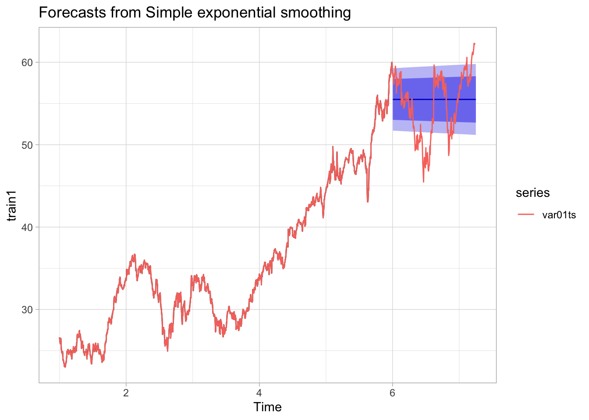
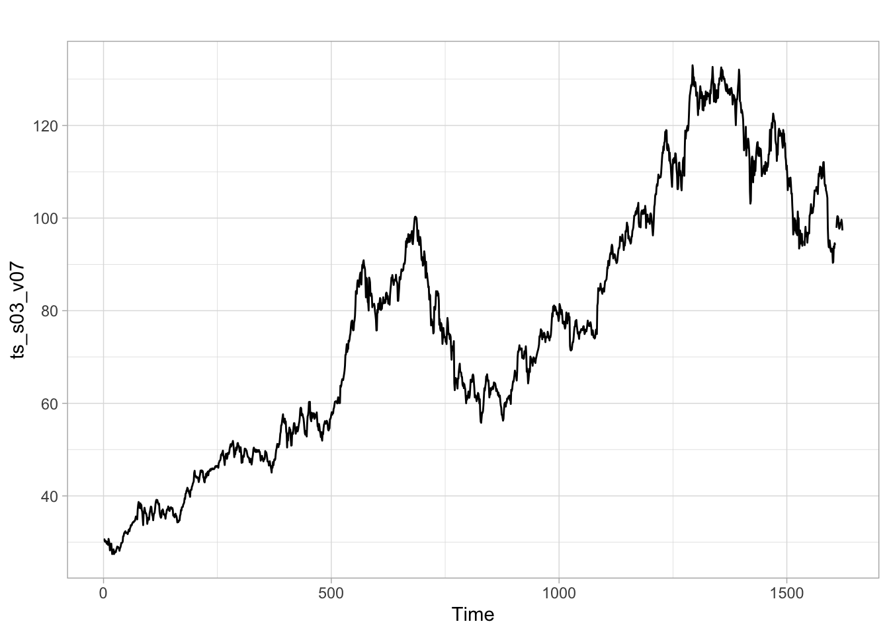
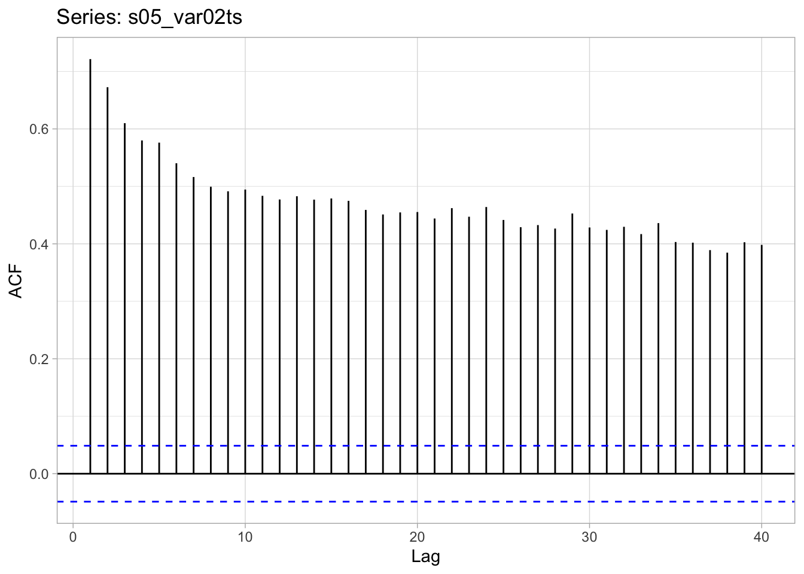
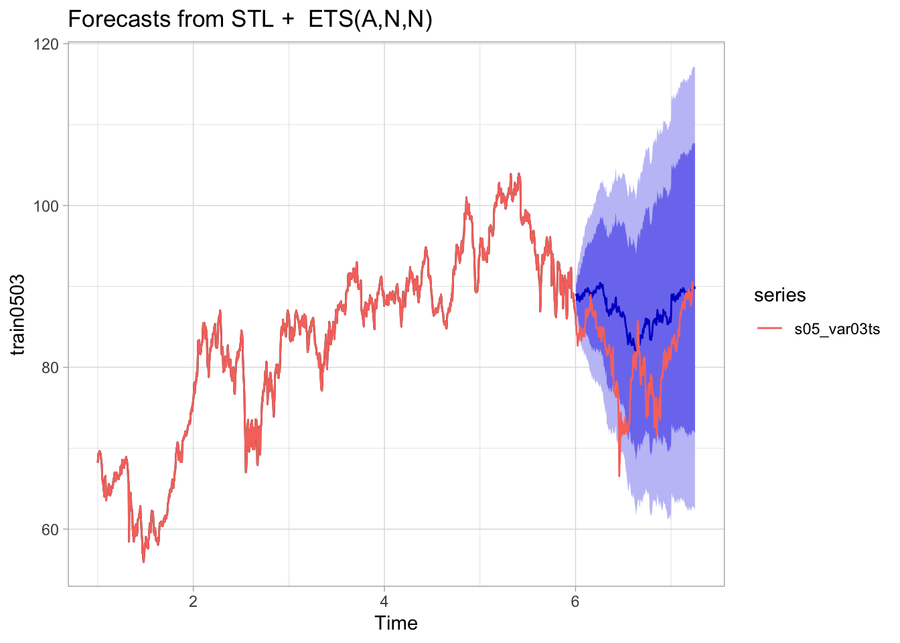

Midterm Project
CUNY DATA 624 | 2023 Summer I
Overview
Praesent ac ipsum ut leo facilisis consequat. Sed aliquam odio vitae est volutpat, sed tincidunt eros imperdiet. Maecenas sit amet dictum massa. Cras ultricies neque lorem, in fermentum turpis venenatis nec. Aenean non diam interdum, tincidunt dui in, maximus orci.
Praesent eget enim id erat volutpat euismod. Vivamus euismod turpis nec sollicitudin accumsan. Duis maximus finibus auctor. Phasellus quis ornare nunc, id porttitor elit. Donec sit amet vulputate arcu. Nulla sodales lacinia nisl, sed hendrerit ex consectetur eget.
Vivamus euismod turpis nec sollicitudin accumsan. Duis maximus finibus auctor. Phasellus quis ornare nunc, id porttitor elit. Donec sit amet vulputate arcu. Nulla sodales lacinia nisl, sed hendrerit ex consectetur eget.
Series One
Praesent ac ipsum ut leo facilisis consequat. Sed aliquam odio vitae est volutpat, sed tincidunt eros imperdiet. Maecenas sit amet dictum massa. Cras ultricies neque lorem, in fermentum turpis venenatis nec.
Variables & Analysis
Series one used two variables, Var01 and Var02. It seems that for both there was little if any seasonality but where the data seemed to have 5 day intervals with scattered gaps. A work days per year pattern was used however I do not believe that there is a major correlation with these series since in most of decomposition at various frequencies showed large runs of wave motion remainders showing their may be some other pattern to the data. each variable had a few missing variables which were imputed where necessary being replaced with the most recent non-NA value before it.
Variable 01 shows an upward trend through the time series with what seems to be plateaus at either end with the mid section appearing linear and two almost camel humps at either end of the linear phase.


Variable 02 shows a very slight downward trend but generally appears to be near white noise.


Both Var01 and Var02 showed a very high amount of correlation as seen with the lag plots with Var01 having near 1.0 correlation almost 40 points out and Var02 with many values hovering around 0.5.
Because of the non seasonal pattern of the data we moved forward using the forecast function which implemented an STL+ETS method and SES with a tuned alpha variable. After comparing these forecasts with a 80/20 training/testing split with the last 20 on the last half we tested the forecast optimizing the MAPE. We found that in all cases the tuned alpha performed better so used this for the Forecast. we found the alpha values optimized at a=0.03 for Var01 and a=0.27.


Model Selection & Forecasts
Since the SES models performed slightly better, these were chosen for the forecast.


Series Two
For the second category we examined time series data for Variables 2 and 3.
Variables
Variable 02 seems to represent a product or activity with a high volume, approximately 40 million units per day! Overall there seems to be a gradually decreasing trend for this item, with neither seasonality nor long-term cyclic patterns detected. The presence of many extreme values for this variable could possibly interfere with the accuracy of our forecasts. In order to correct for these conditions while preserving as much information as possible, we chose to identify and smooth those 66 outliers with a linear interpolation.


Variable 03 seems to represent a product or activity with low volume, approximately 14 units per day. Overall there seems to be a steady trend for this item, with no seasonality detected. This dataset has only two missing values, and one notable extreme value toward the end of the series, smoothed here with a linear interpolation.

Model Selection & Forecasts
To evaluate and select models, we created 80/20 train/test split and score performance using the Mean Absolute Percentage Error (MAPE) statistic.
The three models evaluated for Variable 02 were:
- ARIMA(2,1,3) with drift
- Holt (Damped)
- Simple Exponential Smoothing (SES)
We selected the SES method for this forecast since it produced the smallest MAPE score (30.22).
Our resulting forecast for the next 140 days has a stable mean of approximately 20.7M units daily, but with a fairly large predictive interval.
The three models evaluated for Variable 03 were:
- ARIMA(2,1,0)
- Holt (Damped)
- Simple Exponential Smoothing
We selected the ARIMA(2,1,0) method for this forecast since it produced the smallest MAPE score (16.19).
Our resulting forecast for the next 140 days has a stable mean of approximately 16.2 units daily, but with a fairly large predictive interval.
Series Three
For the third category we examined time series data for Variables 5 and 7.
Variables
Variable 05 seems to represent a product or activity with low volume, approximately 76 units per day. Overall there seems to be a gradually increasing trend for this item with no seasonality detected. This does not appear to be a stationary dataset, but by examining the differenced time series were able to confirm the lack of autocorrelations and seasonality. We also identified and smoothed several outliers and missing values with a linear interpolation before modeling.


Variable 07 seems to represent an almost-identical time series as Variable 05 - in fact, the two datasets are 98% corelated. With some variation, the Variable 07 dataset is approximately 75 units higher than Variable 05 across the board, but appears to be similar in every other regard.
Min. 1st Qu. Median Mean 3rd Qu. Max.
27.48 51.52 74.65 75.43 96.44 134.46 Model Selection & Forecasts
To evaluate and select models, we created 80/20 train/test split and score performance using the Mean Absolute Percentage Error (MAPE) statistic.
The three models evaluated for Variable 05 were: ARIMA(1,1,1) with drift, ETS, and Naive. We selected the Naive method for this forecast since it produced the smallest MAPE score (15.91).
Our resulting forecast for the next 140 days has a stable mean of approximately 130 units daily, but with a fairly large predictive interval.
The three models evaluated for Variable 03 were ARIMA(3,1,2) with drift, ETS and Naive. We selected the Naive method for this forecast since it produced the smallest MAPE score (14.79).
Our resulting forecast for the next 140 days has a stable mean of approximately 128.5 units daily, but with a fairly large predictive interval.

Series Four
Variables & Analysis
Model Selection & Forecasts
Series Five
Variables & Analysis
Series five consisted of two variables var02 and var03. both contained small amounts of missing values and where applicable were replaced based on the previous held value. Additionally since all of these data sets appear to be on a 5 day cycle the work year(260) days was used for establishing frequency.
Var02- In the variable 2 plots we see a gradual small decrease in value with an almost white noise looking fluctuation. It does not seem to show any seasonality as in the decomposition plots we found in most cases there were runs of remainders that formed an almost Wave like pattern.
Var03- variable 3 has what seems to be three patterns in the center of the plot there seems to be slow steady growth that is near linear with a fair amount of fluctuation. Additionally at the start of the data set there is a steep rise and at the end a steep fall. The seasonal patterns seem to make these more gradual however there is a good amount of wave motion in the remainders so there is an aspect of the data this is not accounted for despite the seasonal graph matching a few of the data motifs.


Both variable three and variable five show high levels of corelation within the lag plot with var02 hovering near 0.5-0.4 and var03 hovering around 1-0.8 for over 40 values.


For this analysis we compared how the forcast() function performed using an STL+ETS model and how an SES(simply exponential smoothing) model with tuned alpha variable performed. We tuned the SES by using an algorithm to reduce MAPE to determine the alpha value. We found using the highest alpha=0.99 in both cases gave the most accurate forecast when testing on the last 20% of the data with an 80/20 training testing split and when we compared this to the forecast function performed slightly better.



Model Selection & Forecasts
Since the SES models performed slightly better these were chosen for the forecast.
Series Six
Variables & Analysis
Model Selection & Forecasts
Conclusions
Appendix
R Code
# code here